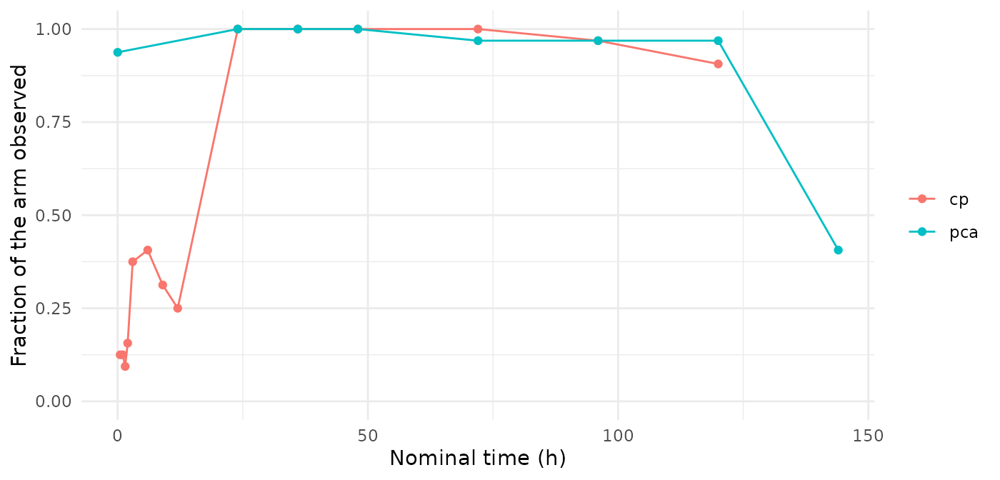

The PMX model study fingerprint
Andrew Stein
Source:vignettes/pmxmodel-fingerprint.Rmd
pmxmodel-fingerprint.RmdEvery generator in this package reduces a study to a fingerprint — a set of summaries small enough to carry out of the environment that holds the real data, and complete enough to build a synthetic study from. The fingerprint is the whole of what a synthetic dataset descends from. Nothing else about the source reaches it, which is why looking at the fingerprint is how you decide whether the output can be trusted, and how you satisfy yourself that no patient left the room.
synpmx_model_estimate() returns this generator’s
fingerprint, as a pmx_fitted_model.
synpmx_model_generate() reads that object and no patient
row.
This vignette walks through it group by group. It is a reference:
read vignette("pmxmodel-demo") first for a run end to end,
and vignette("pmxmodel-algorithm") for how each quantity is
arrived at and why. vignette("pca-fingerprint") is the same
walk through the PCA generator’s fingerprint, and the two are worth
reading side by side.
Two halves, and they are not alike
This fingerprint divides more sharply than the PCA one does.
The estimated half is a population model: a structural form, a handful of fixed effects, a covariance matrix, a residual error. It is perhaps twenty numbers describing the shape of every profile in the study, which is a very small fingerprint for a very strong claim. It also looks exactly like the output of a real population analysis, and it is not one — the candidate set is small and the covariate model is allometric scaling or nothing.
The summarized half is the study’s apparatus: who
was in which arm, when doses were planned and how patients departed from
that plan, which visits were attended, what the covariates looked like,
where the assay limit sat. None of this is estimated. It is exactly the
apparatus synpmx_pca_summarize() builds, from the same
code.
The two halves carry different risks. Twenty fitted numbers are a compact summary of 32 people; a per-arm dosing model with a cycle grid can be much larger and is backed by one arm’s patients rather than the whole cohort.
The study
nlmixr2data::warfarin — thirty-two patients, a single
oral dose, a concentration endpoint and a pharmacodynamic one.
data("warfarin", package = "nlmixr2data")
warfarin <- as.data.frame(warfarin)
warfarin$ntime <- warfarin$time
roles <- pmx_roles(
id = "id", time = "time", nominal_time = "ntime", dv = "dv", amt = "amt",
evid = "evid", dvid = "dvid", covariates = c("wt", "age", "sex")
)
fit <- synpmx_model_estimate(warfarin, roles, seed = 1)The chunk above is shown rather than run: fitting compiles a model,
so this document reads a stored fit and R CMD check never
needs a compiler.
fit
#> A fitted PMX model, from synpmx_model_estimate()
#>
#> fitted on 32 patients, 1 arm(s)
#> structural 1cmt_oral (chosen from 1 candidate(s) on AIC)
#> fixed cl 0.1361, v 7.802, ka 0.562
#> random on cl, v, ka
#> pk endpoint cp
#>
#> These parameters are not estimates to report. They exist to make
#> simulated profiles resemble the source study; the candidate set is too
#> small and the covariate model too thin for any of them to answer a
#> scientific question.The inventory
model_report() is the top-level account, and it
separates the two halves because they answer to different things.
model_report(fit)
#> What this fitted model carries
#>
#> Estimated by nlmixr2
#> structural model 1cmt_oral
#> fixed effects cl 0.1361, v 7.802, ka 0.562
#> between-subject cl 0.252, v 0.14, ka 0.638 (as SD on the log scale)
#> residual error additive 1.07
#> covariate effects cl ~ (wt/70)^0.75, v ~ (wt/70)^1.00
#> pd shapes pca: linear
#>
#> Summarized from the source, not estimated
#> cohort 32 patients in 1 arm(s)
#> visit model 22 grid cells over 2 endpoint(s)
#> dosing model 1 planned cycle(s) per arm | no reductions, skips or early stops
#>
#> How the concentration endpoint was decided
#> endpoint cp (inferred)
#> endpoint compartment post_dose shape proportional
#> cp NA TRUE TRUE NA
#> pca NA TRUE FALSE NA
#> design the median profile rises to a peak at 9 before declining, and 31% of subjects do too
#>
#> Covariate against the individual random effects
#> covariate parameter correlation
#> age ka -0.260
#> sex v -0.225
#> age cl 0.160
#> sex ka -0.095
#> wt cl -0.078
#>
#> A covariate that moves with a random effect and is not in the model above
#> is generated independently of the profiles, so the synthetic data carries
#> no relationship between them. `synpmx_avatar()` keeps those relationships
#> without modelling them.Every section below expands one part of it. The object is a plain list and the names used are its own, so a quantity can be reached directly when no accessor covers it.
names(fit)
#> [1] "structural" "candidates" "parameters"
#> [4] "endpoints" "arms" "dosing"
#> [7] "visits" "schema" "roles"
#> [10] "settings" "n_source" "cells"
#> [13] "pd" "covariate_effects" "covariates"
#> [16] "discrete" "design" "correlations"How the concentration endpoint was decided
Not a released quantity, but the first thing to read: everything downstream is a model of this endpoint, and if the wrong one was chosen nothing else matters.
show(fit$endpoints$signals, "The four signals, per endpoint")proportional reads NA here because
warfarin gives every patient the same dose, so there are no
dose levels to compare — the classification rests on the remaining
signals. A column of NA under proportional is
the object telling you how little evidence it had, and
endpoint_roles is how you overrule it.
fit$design$reason
#> [1] "the median profile rises to a peak at 9 before declining, and 31% of subjects do too"
fit$endpoints$decided_by
#> [1] "inferred"The structural model
fit$structural
#> [1] "1cmt_oral"
model_candidates(fit)
#> model converged aic note
#> 1 1cmt_oral TRUE 887.3187One row, because the default fits one model. pk is what
asks for more.
The fixed effects
The typical parameters, on the natural scale. These are the numbers that look most like a result and are least entitled to be read as one.
model_parameters(fit)$fixed
#> cl v ka
#> 0.1361443 7.8018967 0.5620203Between-subject variability
A covariance matrix on the log scale, one row per parameter carrying a random effect. Generation draws each synthetic subject’s deviations from this matrix.
model_parameters(fit)$omega
#> cl v ka
#> cl 0.06375255 0.00000000 0.0000000
#> v 0.00000000 0.01971671 0.0000000
#> ka 0.00000000 0.00000000 0.4076615
sqrt(diag(model_parameters(fit)$omega)) # as CV on the log scale
#> cl v ka
#> 0.2524927 0.1404162 0.6384838No individual estimates. Empirical Bayes estimates are per-subject quantities, and an object carrying them would be a description of each real patient. They are not here. This matrix is what stands in for them, and it is a statement about the population rather than about anybody in it.
The residual error
model_parameters(fit)$residual
#> $kind
#> [1] "additive"
#>
#> $sd
#> [1] 1.070306Additive here rather than proportional, because warfarin
holds concentrations recorded as zero and a proportional error on zero
is zero. The substitution is recorded on the object rather than being
silent.
The covariate effects
fit$covariate_effects
#> $cl
#> $cl$covariate
#> [1] "wt"
#>
#> $cl$reference
#> [1] 70
#>
#> $cl$exponent
#> [1] 0.75
#>
#>
#> $v
#> $v$covariate
#> [1] "wt"
#>
#> $v$reference
#> [1] 70
#>
#> $v$exponent
#> [1] 1Allometric scaling on clearance and volume, with the standard
exponents. It is asserted rather than tested —
vignette("pmxmodel-algorithm") says why — and
covariate_effects = "none" removes it.
What is not modelled shows up here
show(fit$correlations[order(-abs(fit$correlations$correlation)), ],
"Each covariate against the individual random effects")This is the most important table in the document, and it is a
diagnostic rather than a released quantity. A covariate that moves with
a random effect and is not in the model above is generated
independently of the profiles, so the synthetic data
carries no relationship between the two. synpmx_avatar()
preserves those relationships without modelling them, because a blended
subject’s covariates and profile come from the same donors.
The correlations are computed from the individual random effects and only the correlations are kept, so no per-subject quantity survives into the object.
The pharmacodynamic shapes
lapply(fit$pd, function(shape) c(shape = shape$pd, round(shape$typical, 3)))
#> $pca
#> shape baseline slope
#> "linear" "52.235" "-0.24"
show(fit$pd[[1L]]$candidates, "The three shapes, compared on AIC")A time course with no exposure term. A PD endpoint driven by concentration is reproduced as a curve that resembles the average subject’s response, which is adequate for exercising longitudinal code and is not an exposure-response model.
The covariate distributions
One distribution per covariate per arm, drawn from independently at generation.
str(fit$covariates, max.level = 3)
#> List of 1
#> $ all:List of 3
#> ..$ wt :List of 4
#> .. ..$ kind : chr "lognormal"
#> .. ..$ meanlog: num 4.23
#> .. ..$ sdlog : num 0.19
#> .. ..$ median : num 71.7
#> ..$ age:List of 4
#> .. ..$ kind : chr "lognormal"
#> .. ..$ meanlog: num 3.39
#> .. ..$ sdlog : num 0.304
#> .. ..$ median : num 27.5
#> ..$ sex:List of 3
#> .. ..$ kind : chr "categorical"
#> .. ..$ levels : chr [1:2] "female" "male"
#> .. ..$ probability: num [1:2] 0.156 0.844The arms
data.frame(arm = fit$arms$arms, patients = as.integer(fit$arms$sizes))
#> arm patients
#> 1 all 32The dosing model
Per arm: a planned schedule, a dose ladder, and three discrete-time
hazards. This is the apparatus synpmx_pca_summarize()
builds, unchanged.
arm <- fit$arms$arms[[1L]]
show(fit$dosing[[arm]]$planned, "The planned schedule")
dosing <- fit$dosing[[fit$arms$arms[[1L]]]]
c(levels = length(dosing$levels), reduction = dosing$reduction,
interruption = dosing$interruption, discontinuation = dosing$discontinuation)
#> levels reduction interruption discontinuation
#> 1 0 0 0warfarin is a single dose that everybody received, so
the ladder has one level and all three rates are zero. The model then
reproduces the planned schedule exactly, which is the right answer and
is what those zeros say. On a study where patients reduce, skip cycles
or come off treatment, these are the numbers that carry it — and because
the schedule is drawn before the profile is computed from it, a
synthetic subject who steps down has the lower exposure that
implies.
The visit model
Per endpoint and per retained nominal time, the fraction of the arm holding an observation there. Attendance is drawn per visit at generation.
cells <- fit$cells
cells$probability <- as.numeric(fit$visits[[fit$arms$arms[[1L]]]]$probability)
show(cells[, c("endpoint", "time", "probability")],
"Attendance, per grid cell", paged = TRUE)
library(ggplot2)
ggplot(cells, aes(time, probability, colour = endpoint)) +
geom_line() + geom_point(size = 1.5) +
ylim(0, 1) +
labs(x = "Nominal time (h)", y = "Fraction of the arm observed",
colour = NULL) +
theme_minimal()
A cell is kept only where at least min_arm_patients
distinct patients hold an observation there. A nominal time one patient
attended is that patient, and generating from it would put them
back.
The schema
What the generated table has to look like to be the same study: the columns and their classes, the compartment numbers, the assay limit per endpoint, and how identifiers are written.
fit$schema$columns
#> [1] "id" "time" "ntime" "dv" "amt" "evid" "dvid" "wt" "age"
#> [10] "sex"
fit$schema$cmt_dose
#> NULL
unlist(fit$schema$cmt_obs)
#> NULL
fit$schema$censoring
#> $cp
#> NULL
#>
#> $pca
#> NULLGenerating from it
Everything above, and nothing else, is what the next line reads.
synthetic <- synpmx_model_generate(fit, n_subjects = 32, seed = 7)
str(synthetic)
#> 'data.frame': 513 obs. of 10 variables:
#> $ id : int 34 34 34 34 34 34 34 34 34 34 ...
#> $ time : num 0 0 3 9 24 24 36 36 48 48 ...
#> $ ntime: num 0 0 3 9 24 24 36 36 48 48 ...
#> $ dv : num NA 58 18.6 15.5 13.8 ...
#> $ amt : num 120 0 0 0 0 0 0 0 0 0 ...
#> $ evid : int 1 0 0 0 0 0 0 0 0 0 ...
#> $ dvid : chr NA "pca" "cp" "cp" ...
#> $ wt : num 52.1 52.1 52.1 52.1 52.1 ...
#> $ age : int 33 33 33 33 33 33 33 33 33 33 ...
#> $ sex : Factor w/ 2 levels "female","male": 2 2 2 2 2 2 2 2 2 2 ...
#> - attr(*, "pmx_fitted_model")=List of 18
#> ..$ structural : chr "1cmt_oral"
#> ..$ candidates :'data.frame': 1 obs. of 4 variables:
#> .. ..$ model : chr "1cmt_oral"
#> .. ..$ converged: logi TRUE
#> .. ..$ aic : num 887
#> .. ..$ note : chr ""
#> ..$ parameters :List of 3
#> .. ..$ fixed : Named num [1:3] 0.136 7.802 0.562
#> .. .. ..- attr(*, "names")= chr [1:3] "cl" "v" "ka"
#> .. ..$ omega : num [1:3, 1:3] 0.0638 0 0 0 0.0197 ...
#> .. .. ..- attr(*, "dimnames")=List of 2
#> .. .. .. ..$ : chr [1:3] "cl" "v" "ka"
#> .. .. .. ..$ : chr [1:3] "cl" "v" "ka"
#> .. ..$ residual:List of 2
#> .. .. ..$ kind: chr "additive"
#> .. .. ..$ sd : num 1.07
#> ..$ endpoints :List of 5
#> .. ..$ pk : chr "cp"
#> .. ..$ pd : chr "pca"
#> .. ..$ discrete : chr(0)
#> .. ..$ signals :'data.frame': 2 obs. of 5 variables:
#> .. .. ..$ endpoint : chr [1:2] "cp" "pca"
#> .. .. ..$ compartment : logi [1:2] NA NA
#> .. .. ..$ post_dose : logi [1:2] TRUE TRUE
#> .. .. ..$ shape : logi [1:2] TRUE FALSE
#> .. .. ..$ proportional: logi [1:2] NA NA
#> .. ..$ decided_by: chr "inferred"
#> ..$ arms :List of 2
#> .. ..$ arms : chr "all"
#> .. ..$ sizes: Named int 32
#> .. .. ..- attr(*, "names")= chr "all"
#> ..$ dosing :List of 1
#> .. ..$ all:List of 8
#> .. .. ..$ planned :'data.frame': 1 obs. of 3 variables:
#> .. .. .. ..$ cycle: int 1
#> .. .. .. ..$ time : num 0
#> .. .. .. ..$ amt : num 120
#> .. .. ..$ levels : num 1
#> .. .. ..$ discontinuation: num 0
#> .. .. ..$ interruption : num 0
#> .. .. ..$ reduction : num 0
#> .. .. ..$ patients : int 32
#> .. .. ..$ distinct : int 20
#> .. .. ..$ source_doses : num 1
#> ..$ visits :List of 1
#> .. ..$ all:List of 2
#> .. .. ..$ cells : Named int [1:22] 1 2 3 4 5 6 7 8 9 10 ...
#> .. .. .. ..- attr(*, "names")= chr [1:22] "cp@0.5" "cp@1" "cp@1.5" "cp@2" ...
#> .. .. ..$ probability: Named num [1:22] 0.125 0.125 0.0938 0.1562 0.375 ...
#> .. .. .. ..- attr(*, "names")= chr [1:22] "cp@0.5" "cp@1" "cp@1.5" "cp@2" ...
#> ..$ schema :List of 11
#> .. ..$ censoring :List of 2
#> .. .. ..$ cp : NULL
#> .. .. ..$ pca: NULL
#> .. ..$ columns : chr [1:10] "id" "time" "ntime" "dv" ...
#> .. ..$ prototypes :List of 10
#> .. .. ..$ id : int(0)
#> .. .. ..$ time : num(0)
#> .. .. ..$ ntime: num(0)
#> .. .. ..$ dv : num(0)
#> .. .. ..$ amt : num(0)
#> .. .. ..$ evid : int(0)
#> .. .. ..$ dvid : Factor w/ 2 levels "cp","pca":
#> .. .. ..$ wt : num(0)
#> .. .. ..$ age : int(0)
#> .. .. ..$ sex : Factor w/ 2 levels "female","male":
#> .. ..$ id_class : chr "integer"
#> .. ..$ id_offset : int 33
#> .. ..$ id_levels : NULL
#> .. ..$ cmt_dose : NULL
#> .. ..$ cmt_obs :List of 2
#> .. .. ..$ cp : NULL
#> .. .. ..$ pca: NULL
#> .. ..$ carried : NULL
#> .. ..$ arm_values :List of 1
#> .. .. ..$ all: list()
#> .. ..$ endpoint_specs:List of 2
#> .. .. ..$ cp :List of 5
#> .. .. .. ..$ type : chr "continuous"
#> .. .. .. ..$ levels : NULL
#> .. .. .. ..$ nonnegative: logi FALSE
#> .. .. .. ..$ reason : chr "not every observed value is a whole number"
#> .. .. .. ..$ declared : logi FALSE
#> .. .. ..$ pca:List of 5
#> .. .. .. ..$ type : chr "integer"
#> .. .. .. ..$ levels : NULL
#> .. .. .. ..$ nonnegative: logi TRUE
#> .. .. .. ..$ reason : chr "53 whole-number levels, from 9 to 100"
#> .. .. .. ..$ declared : logi FALSE
#> ..$ roles :List of 19
#> .. ..$ id : chr "id"
#> .. ..$ time : chr "time"
#> .. ..$ nominal_time : chr "ntime"
#> .. ..$ tad : NULL
#> .. ..$ occasion : NULL
#> .. ..$ dv : chr "dv"
#> .. ..$ amt : chr "amt"
#> .. ..$ evid : chr "evid"
#> .. ..$ cmt : NULL
#> .. ..$ dvid : chr "dvid"
#> .. ..$ mdv : NULL
#> .. ..$ rate : NULL
#> .. ..$ cens : NULL
#> .. ..$ limit : NULL
#> .. ..$ addl : NULL
#> .. ..$ ii : NULL
#> .. ..$ assigned_dose : NULL
#> .. ..$ dose_covariate: NULL
#> .. ..$ covariates : chr [1:3] "wt" "age" "sex"
#> .. ..- attr(*, "class")= chr "pmx_roles"
#> ..$ settings :List of 6
#> .. ..$ min_subjects : int 20
#> .. ..$ min_arm_patients : int 3
#> .. ..$ min_time_bins : int 6
#> .. ..$ estimation : chr "focei"
#> .. ..$ covariate_effects: chr "auto"
#> .. ..$ error : chr "add"
#> ..$ n_source : int 32
#> ..$ cells :'data.frame': 22 obs. of 4 variables:
#> .. ..$ index : int [1:22] 1 2 3 4 5 6 7 8 9 10 ...
#> .. ..$ name : chr [1:22] "cp@0.5" "cp@1" "cp@1.5" "cp@2" ...
#> .. ..$ endpoint: chr [1:22] "cp" "cp" "cp" "cp" ...
#> .. ..$ time : num [1:22] 0.5 1 1.5 2 3 6 9 12 24 36 ...
#> ..$ pd :List of 1
#> .. ..$ pca:List of 6
#> .. .. ..$ pd : chr "linear"
#> .. .. ..$ typical : Named num [1:2] 52.23 -0.24
#> .. .. .. ..- attr(*, "names")= chr [1:2] "baseline" "slope"
#> .. .. ..$ aic : num 2137
#> .. .. ..$ baseline_cv: num 0.227
#> .. .. ..$ residual :List of 2
#> .. .. .. ..$ kind: chr "additive"
#> .. .. .. ..$ sd : num 24
#> .. .. ..$ candidates :'data.frame': 2 obs. of 2 variables:
#> .. .. .. ..$ shape: chr [1:2] "constant" "linear"
#> .. .. .. ..$ aic : num [1:2] 2174 2137
#> ..$ covariate_effects:List of 2
#> .. ..$ cl:List of 3
#> .. .. ..$ covariate: chr "wt"
#> .. .. ..$ reference: num 70
#> .. .. ..$ exponent : num 0.75
#> .. ..$ v :List of 3
#> .. .. ..$ covariate: chr "wt"
#> .. .. ..$ reference: num 70
#> .. .. ..$ exponent : num 1
#> ..$ covariates :List of 1
#> .. ..$ all:List of 3
#> .. .. ..$ wt :List of 4
#> .. .. .. ..$ kind : chr "lognormal"
#> .. .. .. ..$ meanlog: num 4.23
#> .. .. .. ..$ sdlog : num 0.19
#> .. .. .. ..$ median : num 71.7
#> .. .. ..$ age:List of 4
#> .. .. .. ..$ kind : chr "lognormal"
#> .. .. .. ..$ meanlog: num 3.39
#> .. .. .. ..$ sdlog : num 0.304
#> .. .. .. ..$ median : num 27.5
#> .. .. ..$ sex:List of 3
#> .. .. .. ..$ kind : chr "categorical"
#> .. .. .. ..$ levels : chr [1:2] "female" "male"
#> .. .. .. ..$ probability: num [1:2] 0.156 0.844
#> ..$ discrete :List of 1
#> .. ..$ all:List of 22
#> .. .. ..$ :List of 2
#> .. .. .. ..$ levels : num 0
#> .. .. .. ..$ probability: num 1
#> .. .. ..$ :List of 2
#> .. .. .. ..$ levels : num [1:4] 1 1.9 2.7 6.6
#> .. .. .. ..$ probability: num [1:4] 0.25 0.25 0.25 0.25
#> .. .. ..$ :List of 2
#> .. .. .. ..$ levels : num [1:3] 0.6 11.4 3.6
#> .. .. .. ..$ probability: num [1:3] 0.333 0.333 0.333
#> .. .. ..$ :List of 2
#> .. .. .. ..$ levels : num [1:5] 11.6 17.6 3.3 4.6 8.4
#> .. .. .. ..$ probability: num [1:5] 0.2 0.2 0.2 0.2 0.2
#> .. .. ..$ :List of 2
#> .. .. .. ..$ levels : num [1:13] 11.1 11.6 11.9 12 12.7 12.9 13.4 15.4 17.3 2.8 ...
#> .. .. .. ..$ probability: num [1:13] 0.0769 0.0769 0.0769 0.0769 0.0769 ...
#> .. .. ..$ :List of 2
#> .. .. .. ..$ levels : num [1:14] 11.3 11.5 11.7 11.9 12.4 12.7 12.9 13.2 13.8 15 ...
#> .. .. .. ..$ probability: num [1:14] 0.0714 0.0714 0.0714 0.0714 0.0714 ...
#> .. .. ..$ :List of 2
#> .. .. .. ..$ levels : num [1:10] 10.2 10.8 11.4 12.2 12.7 12.9 14.4 15 9.7 9.8
#> .. .. .. ..$ probability: num [1:10] 0.0909 0.0909 0.0909 0.0909 0.0909 ...
#> .. .. ..$ :List of 2
#> .. .. .. ..$ levels : num [1:6] 11 11.4 12.4 14 8.6 8.8
#> .. .. .. ..$ probability: num [1:6] 0.333 0.111 0.111 0.111 0.222 ...
#> .. .. ..$ :List of 2
#> .. .. .. ..$ levels : num [1:28] 10 10.1 10.4 10.5 11 11.8 5.6 6.1 6.4 6.5 ...
#> .. .. .. ..$ probability: num [1:28] 0.0312 0.0312 0.0312 0.0312 0.0312 ...
#> .. .. ..$ :List of 2
#> .. .. .. ..$ levels : num [1:25] 10 3.5 4 5.2 5.3 5.7 6.1 6.4 6.6 6.9 ...
#> .. .. .. ..$ probability: num [1:25] 0.0312 0.0312 0.0312 0.0312 0.0312 ...
#> .. .. ..$ :List of 2
#> .. .. .. ..$ levels : num [1:23] 1.8 2.7 3.6 4.3 4.5 4.7 5.1 5.4 5.6 5.9 ...
#> .. .. .. ..$ probability: num [1:23] 0.0312 0.0312 0.0625 0.0312 0.0312 ...
#> .. .. ..$ :List of 2
#> .. .. .. ..$ levels : num [1:21] 0.8 1.5 2.4 2.7 3.2 3.3 3.4 3.6 4 4.1 ...
#> .. .. .. ..$ probability: num [1:21] 0.0312 0.0312 0.0312 0.0312 0.0625 ...
#> .. .. ..$ :List of 2
#> .. .. .. ..$ levels : num [1:18] 0.9 1 1.2 1.4 1.7 2.3 2.4 2.9 3 3.1 ...
#> .. .. .. ..$ probability: num [1:18] 0.0323 0.0323 0.0323 0.0323 0.0323 ...
#> .. .. ..$ :List of 2
#> .. .. .. ..$ levels : num [1:16] 0.9 1.1 1.3 1.4 1.7 1.9 2 2.2 2.3 2.4 ...
#> .. .. .. ..$ probability: num [1:16] 0.0345 0.069 0.0345 0.0345 0.069 ...
#> .. .. ..$ :List of 2
#> .. .. .. ..$ levels : num [1:7] 100 82 85 86 88 90 92
#> .. .. .. ..$ probability: num [1:7] 0.7 0.0333 0.0667 0.0333 0.1 ...
#> .. .. ..$ :List of 2
#> .. .. .. ..$ levels : num [1:16] 25 30 32 33 34 35 36 37 39 41 ...
#> .. .. .. ..$ probability: num [1:16] 0.0312 0.0312 0.125 0.0625 0.0625 ...
#> .. .. ..$ :List of 2
#> .. .. .. ..$ levels : num [1:13] 15 20 21 22 23 24 25 26 27 28 ...
#> .. .. .. ..$ probability: num [1:13] 0.0312 0.125 0.0625 0.125 0.0938 ...
#> .. .. ..$ :List of 2
#> .. .. .. ..$ levels : num [1:16] 11 12 13 14 15 16 17 18 19 20 ...
#> .. .. .. ..$ probability: num [1:16] 0.0312 0.0312 0.0312 0.0312 0.0625 ...
#> .. .. ..$ :List of 2
#> .. .. .. ..$ levels : num [1:18] 11 13 14 15 16 17 18 19 20 22 ...
#> .. .. .. ..$ probability: num [1:18] 0.0323 0.0323 0.0645 0.0323 0.0645 ...
#> .. .. ..$ :List of 2
#> .. .. .. ..$ levels : num [1:20] 14 15 17 18 19 20 21 22 23 28 ...
#> .. .. .. ..$ probability: num [1:20] 0.0323 0.0323 0.0968 0.0645 0.0645 ...
#> .. .. ..$ :List of 2
#> .. .. .. ..$ levels : num [1:27] 11 18 19 20 21 22 23 24 25 26 ...
#> .. .. .. ..$ probability: num [1:27] 0.0323 0.0323 0.0323 0.0323 0.0323 ...
#> .. .. ..$ :List of 2
#> .. .. .. ..$ levels : num [1:12] 100 12 25 33 35 39 41 45 48 54 ...
#> .. .. .. ..$ probability: num [1:12] 0.0769 0.0769 0.0769 0.1538 0.0769 ...
#> ..$ design :List of 6
#> .. ..$ route : chr "oral"
#> .. ..$ rising : num 0.312
#> .. ..$ reason : chr "the median profile rises to a peak at 9 before declining, and 31% of subjects do too"
#> .. ..$ interval : int 1
#> .. ..$ richness :List of 4
#> .. .. ..$ per_subject: num 6
#> .. .. ..$ before_peak: num 0
#> .. .. ..$ after_peak : num 6
#> .. .. ..$ rich : logi FALSE
#> .. ..$ candidates: chr "1cmt_oral"
#> ..$ correlations :'data.frame': 9 obs. of 3 variables:
#> .. ..$ covariate : chr [1:9] "wt" "wt" "wt" "age" ...
#> .. ..$ parameter : chr [1:9] "cl" "v" "ka" "cl" ...
#> .. ..$ correlation: num [1:9] -0.0782 -0.0104 0.0337 0.1601 0.0323 ...
#> ..- attr(*, "class")= chr "pmx_fitted_model"
#> - attr(*, "pmx_source")= chr "model"Where to go next
-
vignette("pmxmodel-demo")— this generator run on a study end to end. -
vignette("pmxmodel-algorithm")— how each quantity above is arrived at. -
vignette("pca-fingerprint")— the same walk for the PCA generator, which carries the same apparatus and a completely different description of the profiles. -
vignette("avatar-scorecard")— the checks that read a generated dataset against its source.